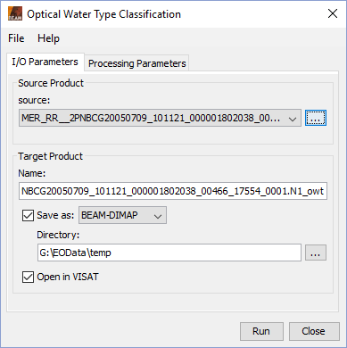
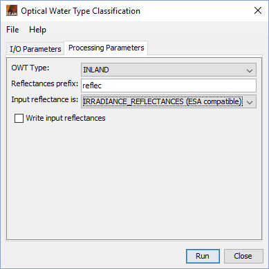

| OWT Classification - Processor Description | |
The OWT Classification processor can be invoked from the VISAT tool menu by selecting
the MERIS OWT Classification command from the Processing / Thematic Water Processing menu. On the command line the OWT Classification processor is
available by means of the Graph Processing Tool gpt which is located in the BEAM bin
directory. Typing gpt OWTClassification -h displays further information.

Source product: Here the user specifies the source product. The combo box presents a list of all products opened in the VISAT. The user may select one of these or, by clicking on the button next to the combo box, choose a product from the file system.
Name: Used to specify the name of the target product.
Save as: Used to specify whether the target product should be saved to the file system. The combo box presents a list of available file formats. The text field or the button next to it allow to specify a target directory.
Open in VISAT: Used to specify whether the target product should be opened in VISAT. When the target product is not saved, it is opened in VISAT automatically.

OWT Type: Select one of the available types from the predefined list. For a description of the types see the Algorithm Specification
Reflectances prefix: Specifies the prefix of the reflectance bands which are used for processing.
Input reflectance is: Specifies if the input reflectance is either radiance reflectances or irradiance reflectances (ESA compatible).
Write input reflectances: Whether or not the input reflectances shall be copied into target product.